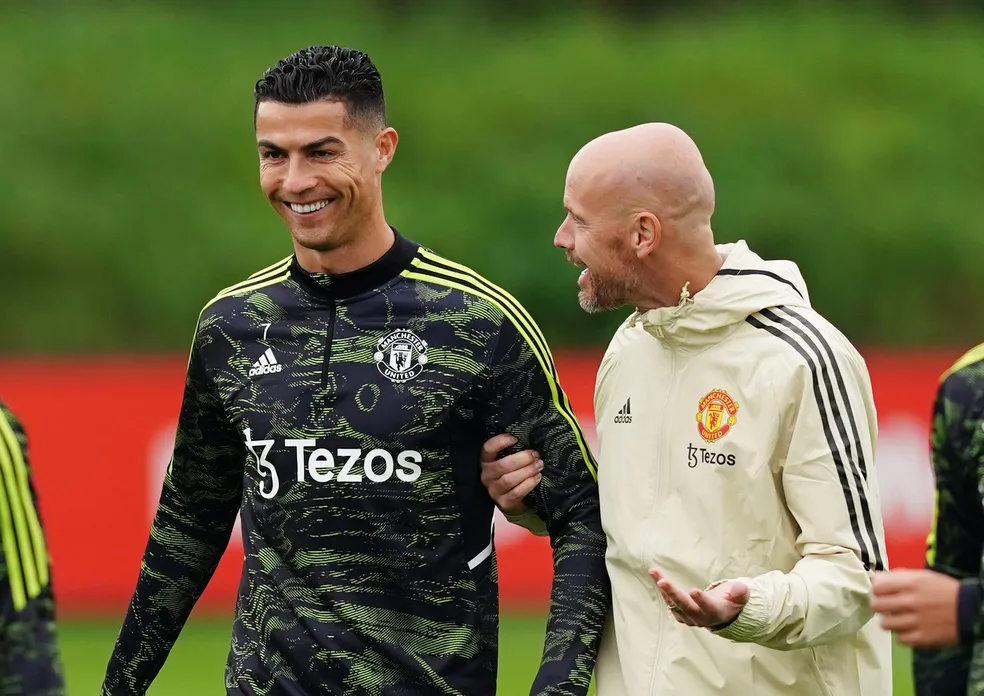

A possível transferência de Cristiano Ronaldo para o Al Nassr, da Arábia Saudita, pode se concretizar em breve. É o que garante o jornal "Marca", primeiro a noticiar a negociação do craque português com o clube árabe - e desta vez assegura que o jogador está perto de assinar o contrato com a equipe. CR7 ainda se tornaria embaixador de uma candidatura saudita à Copa do Mundo de 2030.
Segundo o diário esportivo, Cristiano Ronaldo decidiu viajar a Riad para para assinar o contrato que o colocaria como grande estrela do esporte no país. Ele teria dois anos e meio de vínculo para jogar pelo Al Nassr, um dos maiores clubes locais, e depois seguiria até 2030 como embaixador de uma candidatura da Arábia Saudita para organizar o Mundial daquele ano, junto a Egito e Grécia. O acordo poderia ser oficializado "nas próximas horas".
Em meio à Copa do Mundo, o "Marca" trouxe à tona o interesse do Al Nassr em contar com Cristiano Ronaldo e a intenção do jogador de acertar um contrato com cifras astronômicas para seguir a carreira após rescindir com o Manchester United. O jornal chegou a cravar que o destino do atleta estava selado, mas CR7 veio a público para negar.
Segundo a publicação, o astro meditou durante as duas últimas semanas sobre o tema e pediu mais tempo antes de fechar o contrato com o clube da Arábia. Enquanto isso, teriam sido realizadas reuniões para avançar na negociação, até que o Al Nassr viabilizasse a contratação diante de mecanismos de controles financeiros.
Cristiano Ronaldo na Arábia Saudita?
O futebol árabe estaria tentando se desenvolver novamente, e os dirigentes buscariam fortalecer a liga local. E Cristiano Ronaldo poderia ser o principal impulso midiático para isso. Sua equipe poderia rivalizar com o Al Hilal, que vem se destacando a nível continental e tentou se aproximar de CR7 no ano passado.
O Al Nassr atualmente é comandado pelo técnico Rudi García, que recentemente comandou o Lyon. Seu elenco conta com jogadores que já se destacaram no futebol europeu, como o brasileiro Talisca, o colombiano Ospina e o camaronês Aboubakar.
A saída de Cristiano Ronaldo do Manchester United
O Manchester United decidiu rescindir o contrato com Cristiano Ronaldo em meio à Copa do Mundo, dias depois de ir ao ar uma polêmica entrevista do craque ao programa "Piers Morgan Uncensored" na TV britânica, na qual o jogador fez duras críticas à diretoria e ao técnico Erik Ten Hag. As declarações foram uma espécie de gota d'água de problemas envolvendo o craque e o clube na atual temporada, depois de o jogador chegar a ser afastado por ter se recusado a ir a campo em uma partida da Premier League.
O atacante português acusou "algumas pessoas" de tentarem forçar sua saída do Manchester United e disse se sentir traído. Entre os alvos de suas declarações estiveram o atual técnico do time, Erik Ten Hag, e o ex-comandante na temporada passada, Ralph Rangnick. CR7 chegou a dizer que "não respeita" Ten Hag, pois o holandês "não mostrou respeito" por ele.
No papo, CR7 contou que não viajou para os treinos e amistosos preparatórios na Tailândia e Austrália para apoiar a família e acompanhar a filha Bella, com apenas três meses à época, que se recuperava de um problema de saúde. O astro português reclamou na entrevista que não se sentiu apoiado pelos dirigentes. Cristiano Ronaldo também não poupou palavras ao dizer que o Manchester United "parou no tempo" desde a saída de Alex Ferguson e está longe do patamar dos principais rivais do futebol inglês por conta dos erros cometidos nas últimas gestões dos Red Devils. E afirmou que nunca foi procurado pelos irmãos Glazer, donos do clube.
O clube se manifestou oficialmente depois de todos os trechos da entrevista irem ao ar e prometeu agir. Logo a imprensa inglesa levantou a possibilidade de uma rescisão partindo do United, o que se concretizou na última terça, quando foi anunciado fim do vínculo do jogador com a equipe inglesa - que iria, originalmente, até o meio do ano que vem.
A relação polêmica com Erik Ten Hag
A rescisão foi o desfecho melancólico para uma temporada um tanto quanto estranha de CR7 no Manchester United, onde se tornou ídolo por sua primeira passagem, entre 2003 e 2009, quando conquistou uma Liga dos Campeões e ganhou o primeiro prêmio de melhor jogador do mundo.
Cristiano Ronaldo, de 37 anos, voltou ao Manchester United na temporada passada, quando teve um bom desempenho, terminando como artilheiro do time com 24 gols em 39 partidas. Apesar disso, a temporada 2022/23 começou com o craque envolto em dúvidas sobre seu futuro, uma vez que ele desejaria deixar o United para buscar uma equipe que jogasse a Liga dos Campeões. Em a especulações, ele não participou da pré-temporada com o recém-chegado Erik Ten Hag, que não escondeu sua insatisfação com a ausência.
CR7 acabou permanecendo em Manchester, mas logo veio à tona a perda de espaço no elenco, com o astro amargando o banco de reservas constantemente. Isso começou a minar sua relação com o técnico holandês, apesar de Ten Hag dizer que admirava e contava com o atacante em seus planos. Porém, o atrito veio à tona em um duelo contra o Tottenham, pela Premier League, em outubro.
Na ocasião, Cristiano Ronaldo deixou o banco de reservas ainda durante a partida, e depois Ten Hag indicou que ele se recusou a ir a campo quando solicitado, no fim do jogo. O problema disciplinar fez o holandês pedir uma multa e o afastamento do astro, que depois foi reintegrado e voltou a ser utilizado em mais quatro partidas, sendo titular em todas elas.
A aparente trégua, porém, chegou ao fim com a polêmica entrevista de Cristiano Ronaldo, que foi ao ar horas depois do último jogo do Manchester United antes da Copa do Mundo, contra o Aston Villa, no dia 6 de novembro. Com o craque longe, concentrado com a seleção portuguesa, o clube foi forçado a agir e encerrar a segunda passagem do jogador por Old Trafford.